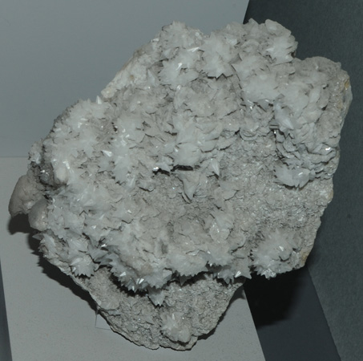

|

| BaCa(CO3)2
This sample of alstonite is displayed in the Smithsonian Museum of Natural History. Alstonite is a carbonate of barium and calciumwith the composition BaCa(CO3)2. This sample is about 12 x 12 cm and is from Alston Moor, Cumbria, England.
|